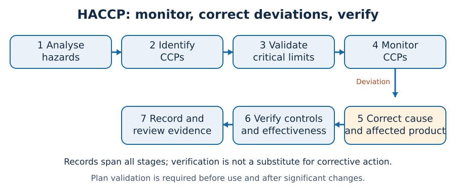
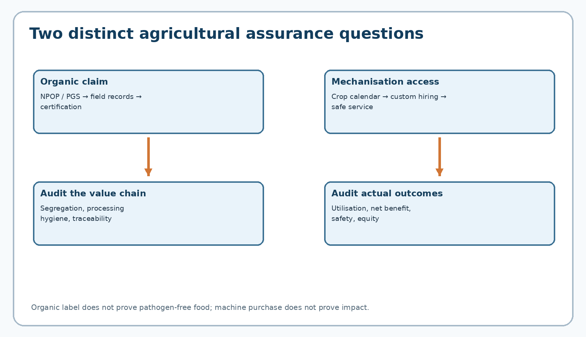
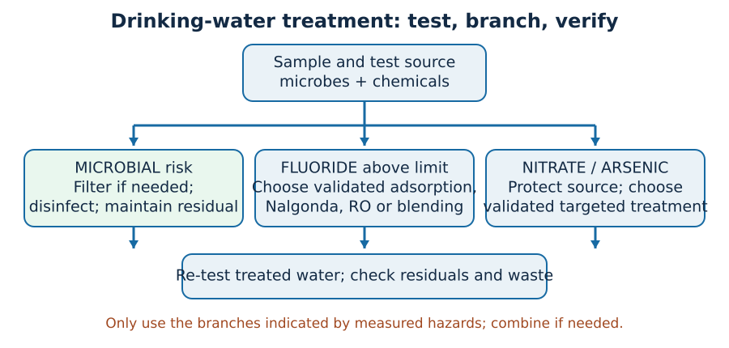

Integrated PDF · Editable master · Preserved original PDF
TGPSC Group I · Paper V · Unit II · Topic 3 · 24 October 2026 · English learning draft · NOT academically approved
The original commission-hosted Notification No. 02/2024 dated 19 February 2024, Paper V, Unit II, item 3 states: “Food bio-technology, Food safety and Food quality standards, Food Laws and Regulations. Recent trends in organic farming and farm mechanization. Safe Drinking Water – Defluoridation and other Techniques.” [S01]. The syllabus was rechecked against the commission's PDF on 24 October 2026. The material below covers each component as a scientific and governance question, not as an unverified collection of coaching notes.
| Official syllabus component | Detailed treatment | Examination purpose |
|---|---|---|
| Food bio-technology | Sections 1–3 | Fermentation, enzymes, processing and limitations |
| Food safety and quality standards | Sections 4–5 and 7 | Hazards, HACCP, testing, traceability |
| Food laws and regulations | Section 6 | FSS Act, FSSAI, licensing, labels, enforcement |
| Recent trends in organic farming | Sections 8–9 | Agronomy, NPOP, PGS, certification, Telangana |
| Farm mechanisation | Sections 10–11 | Machinery, custom hiring, precision and post-harvest |
| Safe drinking water | Sections 12 and 15 | Source protection, testing, multiple barriers |
| Defluoridation | Sections 13–14 | Fluorosis, Nalgonda, adsorption, RO, blending |
| Applied integration | Sections 16–18 | Telangana cases, competing viewpoints, policy |
Scope and provenance: This is original explanatory study material, not an official textbook or an official question paper. All 30 MCQs and six mains model answers are original practice. No item is labelled an official previous-year question without a source paper and question number. No academic reviewer has approved this draft.
After studying this chapter, a candidate should be able to explain fermentation and processing biotechnology; classify food hazards; distinguish food safety, quality and certification; apply HACCP reasoning; describe Indian food law; compare organic assurance systems; appraise mechanisation economics; interpret drinking-water quality; select defluoridation approaches; and formulate an integrated Telangana district response.
Food systems begin with living organisms and end with human exposure. Microbes transform milk into curd, grains into fermented batter and sugars into acids; agricultural machinery changes how raw materials are harvested; storage and processing determine whether a safe crop reaches a household safely. The same chain can introduce hazards through contaminated irrigation water, improper fermentation, pesticide residues, poor sanitation, adulteration or ineffective treatment of drinking water. A complete account must therefore follow the journey from farm and source water to processing, distribution, consumption and public-health surveillance. Food biotechnology creates useful products; food safety manages hazards; standards make measurable claims enforceable; organic certification verifies production processes; mechanisation changes productivity and risks; water treatment protects a basic prerequisite of nutrition.
The distinction between hazard and risk is foundational. A hazard is an agent or condition capable of causing harm, such as Salmonella in a food ingredient or excessive fluoride in groundwater. Risk combines the probability and severity of harm under actual exposure. A bacterium that is destroyed by a validated heat process may be a hazard in raw material but not an unacceptable risk in the finished product. Conversely, apparently clean water can remain unsafe if dissolved arsenic or fluoride exceeds the relevant standard: clarity does not establish chemical safety. Public policy needs both laboratory measurements and knowledge of who consumes the product, how often, and under which conditions.
Food security, food safety and nutritional security overlap but are not interchangeable. A village may produce enough calories yet experience anaemia, unsafe drinking water or contaminated milk. A cold chain may preserve quantity and reduce microbial spoilage but still fail if pesticides or toxins entered before harvesting. Better technology therefore does not automatically imply safer food. It must be accompanied by validated processes, affordable monitoring, traceability, consumer information and institutions capable of acting on violations. Telangana provides a useful lens: horticultural value chains around Hyderabad, paddy and millet systems, peri-urban dairy markets and groundwater-dependent habitations face different combinations of biological, chemical and economic risk.
For examination answers, use a consistent analytical sequence: identify the scientific principle, locate the hazard or productivity constraint, name the regulatory or operational mechanism, explain the Telangana relevance, acknowledge trade-offs, and recommend measurable implementation. This is stronger than listing technologies without describing what they can and cannot achieve.
Food biotechnology is the deliberate use of organisms, cells, enzymes or biological information to produce, preserve, improve or assess food. Traditional fermentation predates molecular genetics: naturally occurring or selected microorganisms convert substrates into desirable acids, alcohols, gases and flavour compounds. In curd, lactic acid bacteria metabolise lactose and lower pH, which changes protein structure and inhibits some competing organisms. In idli and dosa batter, mixed microbial activity generates acid, carbon dioxide and characteristic texture. In bread, yeast produces carbon dioxide that expands dough. The common principle is metabolic conversion, but the safety controls and desired endpoints differ by food. A familiar traditional food is not exempt from contamination if water, equipment or handling is unsafe.
Modern biotechnology adds defined starter cultures, enzyme engineering, microbial screening, molecular diagnostics and fermentation optimisation. A starter culture is a known inoculum chosen for predictable acidification, flavour or stability. Defined cultures can reduce variability compared with uncontrolled spontaneous fermentation, although they require reliable handling and verification. Enzymes such as amylases break starch into smaller sugars; pectinases improve juice extraction and clarification; lactase hydrolyses lactose in lactose-reduced dairy products. These are processing aids or ingredients with specific technological roles, not generic health remedies. An industrial processor evaluates enzyme activity, operating conditions, allergen implications, residuals and applicable permissions before adoption.
Probiotics, prebiotics and fermented foods must be separated. Probiotics are live microorganisms that, when administered in adequate amounts, confer a demonstrated health benefit on the host; benefits are strain-specific and dose-dependent. A prebiotic is a substrate selectively used by host microorganisms with a demonstrated benefit. Fermented food need not contain live organisms at the point of sale, and live organisms do not automatically qualify as probiotics. A claim that every fermented food cures gastrointestinal disease is scientifically indefensible. An ICAR pilot plant for probiotic fruit juices illustrates the possibility of developing controlled non-dairy formulations, but a pilot technology is not evidence that every marketed product has a clinical effect.
Modern applications include microbial production of vitamins and amino acids, precision fermentation of selected proteins, bio-preservation using antimicrobial metabolites, biosensors for contamination and molecular identification of foodborne organisms. Biofortification improves nutritional composition of crops through breeding or other techniques; fortification adds nutrients during processing. Both aim to address deficiencies but differ in intervention point, quality assurance and reach. Biotechnology can reduce post-harvest loss and create value for farmer-producer organisations, yet technology selection must consider capital, electricity, skilled operators, market access, waste disposal and local dietary patterns. In a Telangana millet enterprise, controlled fermentation and hygienic packaging may improve shelf life, but the business also needs moisture control, labelling compliance and distribution economics.
Fermentation has a measurable process logic: substrate selection, culture or natural inoculum, environmental conditions, metabolic conversion, monitoring and product stabilisation. Temperature affects microbial growth and enzyme kinetics; pH shapes which organisms dominate; oxygen determines whether aerobic or anaerobic pathways are favoured; salt and water activity influence survival. Industrial plants monitor critical variables because the same process that produces desirable flavours can fail if an unintended microorganism outcompetes the starter. The objective is not simply maximum microbial growth but reproducible quality within a validated safe operating range.
Preservation technologies attack different failure mechanisms. Pasteurisation applies controlled heat to reduce target pathogens and spoilage organisms but is not the same as sterilisation. Commercial sterilisation aims at shelf stability under defined conditions, including control of relevant spores in low-acid foods. Refrigeration slows many organisms but does not reliably kill them; it depends on uninterrupted temperature control. Drying lowers water activity, while fermentation often lowers pH. Modified-atmosphere packaging changes the gas environment and can prolong quality for particular products, but it cannot compensate for poor sanitation. No single preservation method is universally adequate; combined or 'hurdle' approaches work when their effects are validated together.
A process may be biologically successful yet unsafe because of post-process contamination. For example, milk can be correctly pasteurised but recontaminated by an unclean filling line. Packaged salad may be chilled but contaminated before packing. Grain may be dry at harvest and develop mould if stored in a humid warehouse; some mycotoxins persist even when the mould is no longer visibly active. Prevention therefore requires controls before, during and after processing: supplier qualification, water testing, cleanable equipment, staff hygiene, pest management, temperature logging, segregation of raw and ready-to-eat areas, and a traceable recall system.
The public-administration implication is that inspection must test process capability, not merely take occasional finished-product samples. A good plant can demonstrate calibrated thermometers, records of corrective actions, validated cleaning and an accountable food-safety team. Small businesses face higher fixed costs for such systems; public extension, common laboratories, shared cold storage and targeted training may be more effective than punishment alone. Yet concessions cannot mean accepting unsafe food. Risk-based enforcement should combine proportionate guidance with prompt action where exposure is serious.
Biological hazards include pathogenic bacteria, viruses, parasites and harmful microbial metabolites. Contaminated raw milk, improperly cooked food, infected handlers, unsafe irrigation water and cross-contamination can transmit disease. Foodborne pathogens are not all controlled by the same intervention: viruses may not multiply in food but can survive handling; some bacteria form spores; certain toxins resist ordinary cooking. A public-health response therefore depends on the organism, food matrix and route of exposure. Testing a few random products is insufficient if contamination occurs intermittently; preventive systems must address likely points of entry.
Chemical hazards include pesticide residues, veterinary drug residues, heavy metals, cleaning chemicals, unauthorised additives, industrial contaminants and natural toxins. Legal residue limits are not arbitrary 'zero chemical' rules: they reflect assessment of exposure and toxicology under specified uses, and must be interpreted under current notified standards. Excessive fluoride is a water-quality hazard rather than a microbial infection. A chemical test is necessary when the contaminant is dissolved and invisible. Physical hazards include glass, metal fragments, stones and plastic pieces; sieves, magnets, metal detectors, maintenance and packaging integrity help reduce them. Allergens such as milk, peanuts or certain cereals create a separate problem: a product can be microbiologically safe yet dangerous to a susceptible person because of undeclared ingredients or cross-contact.
Adulteration is the deliberate or inadvertent substitution, addition or contamination that compromises identity, composition or safety. It differs from an ordinary process defect, although both can breach the law. A consumer may encounter diluted milk, substituted edible oil or misleading 'pure' and 'organic' claims. The correct investigation distinguishes analytical evidence, supply-chain records and legal standards from rumours or unvalidated home tests. Simple colour-change demonstrations may educate but should not be treated as definitive regulatory proof. Official laboratories and properly collected samples are essential for enforcement and fair treatment of businesses.
Food safety is also a social-equity issue. Informal vendors and small processors often work with limited water, electricity and storage; consumers with low incomes have fewer choices and may bear higher exposure. Solutions must provide affordable safe infrastructure, not merely demand documentation. Public procurement for schools and hospitals should specify standards, audit suppliers and maintain traceability. Telangana's urban markets need surveillance of cold chains and ready-to-eat foods, while rural supply chains may prioritise drying, safe water, residue awareness and village-level testing access.
Food quality includes sensory properties, nutrition, composition, consistency and consumer acceptability; food safety concerns unacceptable health hazards. A mango drink may be safe but of poor quality because of low fruit content or misleading labelling. Conversely, attractive appearance is no evidence of microbiological safety. Standards convert claims into measurable parameters: product identity, permitted ingredients, compositional limits, contaminant ceilings, sampling methods and labelling obligations. They reduce information asymmetry between sellers and consumers, support fair competition and allow laboratory-based dispute resolution.
Quality control and quality assurance are different levels of management. Quality control tests a batch against a specification; quality assurance designs systems to make compliant output repeatable. Good Manufacturing Practices (GMP) address facilities, equipment, process control and personnel; Good Hygiene Practices (GHP) address sanitation, contamination prevention and personal hygiene. Hazard Analysis and Critical Control Point (HACCP) identifies significant hazards and specifies controls at points where loss of control would create unacceptable risk. A critical control point is not every operational step; it is a step essential to prevent, eliminate or reduce a significant hazard to an acceptable level.
A typical HACCP sequence is to assemble a team, describe product and intended use, map and confirm the process, conduct hazard analysis, identify critical control points, set validated critical limits, monitor them, specify corrective actions, verify system performance and keep records. Consider pasteurised milk: an appropriately validated heat-time treatment may be a critical control point, whereas routine floor cleaning is usually a prerequisite programme. If a heat recorder shows a deviation, the plant must segregate affected product and decide its disposition; simply recording the failure without action defeats HACCP. Verification checks whether the system works over time, while validation supplies evidence that a chosen control is capable of controlling the hazard.
The FSSAI food-safety officer manual explains Schedule 4 hygiene requirements and food-safety management systems under licensing regulations. This matters because a certificate or test result alone is not an immunity from enforcement. A district officer should ask for records that connect identified hazards to preventive actions. For a small Telangana pickle producer, an achievable starting system may include potable water, controlled acidity, sanitation, labelled batches and recall contacts. For a large dairy, automated process monitoring and supplier audits may be justified. The principle is common; the implementation is proportionate to scale and risk.
India's central framework is the Food Safety and Standards Act, 2006, which established the Food Safety and Standards Authority of India (FSSAI) and consolidated important food-law functions into a science-based regulatory architecture. Rules and regulations under the Act govern licensing and registration, food product standards, additives, contaminants, packaging, labelling, imports, laboratories and other subjects. The Act is not identical to every regulation made under it: amendments and notified commencement dates matter. The food business operator is responsible for compliance; public authorities set and enforce standards through authorised procedures.
Institutional roles should not be conflated. FSSAI frames national standards and operates central regulatory functions; state food-safety departments implement inspection and enforcement within their jurisdictions under the statutory structure. Designated Officers, Food Safety Officers, Food Analysts and recognised laboratories have distinct responsibilities. A food business generally requires registration or a licence according to applicable criteria; the FoSCoS system supports this administrative process. Licensing is permission to operate subject to conditions, not a declaration that every future batch is safe. Enforcement may involve inspections, sampling, improvement notices, adjudication, prosecution and recalls, subject to law and procedural safeguards.
Food labels communicate legally important information: product name, ingredients, relevant allergen declarations, nutritional information, dates, manufacturer details and applicable identifiers. The Food Safety and Standards (Labelling and Display) Regulations, 2020 and subsequent amendments are especially important for consumer protection. Claims such as 'natural', 'sugar-free', 'organic' or 'high protein' cannot be accepted merely because a company uses them in advertising; their permissibility depends on current standards and evidence. Students must avoid repeating obsolete threshold figures from coaching notes. Regulatory text changes, and the date of a draft is not the date of an enforceable final rule.
In June 2026 FSSAI published an amendment to the licensing and registration regulations, following a January 2026 draft and consultation. This is a useful current-affairs illustration of delegated legislation: a draft invites objections; the final Gazette text determines the legal change and its operative timing. Similarly, the FSSAI notifications portal records a September 2026 laboratory-analysis amendment and other dated notifications. An exam answer should explain why better timelines, accredited testing and transparent labelling can improve accountability, while also recognising compliance costs and the need for training of small food businesses. Neither 'more regulation' nor 'less regulation' alone guarantees safe food; design and enforcement quality are decisive.
Laboratory testing answers a defined question about a defined sample. Microbial culture, rapid antigen or molecular assays, chromatography, spectroscopy and compositional analysis each have strengths and limitations. Sensitivity concerns the ability to detect true positives; specificity concerns avoiding false positives. Detection limit, sampling plan, matrix effects and chain of custody matter as much as the instrument name. A negative result in one sampled packet cannot establish that an entire consignment is free of intermittent contamination. Conversely, a screening result should be confirmed using legally accepted methods before serious enforcement consequences follow.
Surveillance combines routine sampling, complaints, outbreak reports, supplier records and trend analysis. A credible system distinguishes risk-based inspection from indiscriminate inspection: high-risk ready-to-eat foods, repeated violations, vulnerable consumers and poor temperature control deserve priority. Traceability links a batch to inputs, processing dates, destinations and customers; it enables targeted recall rather than indiscriminate destruction. A recall is a controlled process of locating and removing unsafe products, informing affected people and correcting root causes. Without batch coding and distributor records, even a technically sound laboratory cannot identify who received a contaminated product.
Consider a hypothetical Telangana school-meal supplier whose cooked food is associated with illness. The investigation must preserve clinical evidence, food and water samples, staff histories, temperature records, supplier invoices and timelines. An immediate precautionary suspension may be warranted to protect children, but the eventual causal claim must follow evidence. If multiple kitchens use the same ingredient, a common-source investigation is essential; if only one kitchen is affected, handling or local water may be implicated. Corrective action could include safe water, validated cooking, separate utensils and supplier changes rather than merely changing a contractor's name.
Technology can assist through digital batch records, laboratory information systems, QR traceability and automated cold-chain alerts. Yet poor input data create false confidence. A QR code is not proof of safety, and a dashboard is not a substitute for field inspection. Public procurement should require data retention, privacy protection and independent auditability. In a mains answer, the useful distinction is between detecting a failure after exposure and preventing exposure through validated controls.
Organic farming is a regulated production approach emphasising soil health, ecological processes, biodiversity and restrictions on specified synthetic inputs. It is not the assertion that an organic crop contains no chemicals: water, nutrients and plant compounds are chemical substances, and even organically produced food can contain natural toxins or microbial hazards. The meaningful question is whether the production and handling system complies with recognised organic standards and whether the final food is safe. Practices include crop rotation, compost, green manuring, mulching, biological pest management, habitat diversification and careful nutrient cycling. Their success depends on soil, climate, crop and management rather than on a label alone.
The conversion period is economically important. Farmers may experience transitional yield changes, new labour requirements, uncertain markets and the cost of record-keeping before receiving a premium. Organic nutrient inputs often release nutrients more slowly than readily soluble fertilisers, and compost supply can become a bottleneck. Biological pest management can work well as part of integrated ecological management but may fail during a severe outbreak without adequate monitoring. Advocates emphasise reduced synthetic-input dependence, soil ecology and niche-market premiums; critics point to land requirements, variable yields and certification costs. The defensible policy is crop- and region-specific evaluation using yield, net income, soil indicators, environmental externalities and household nutrition.
NPOP and PGS-India are different assurance systems. APEDA administers the National Programme for Organic Production, including accreditation of certification bodies and traceability arrangements important for trade. Participatory Guarantee Systems rely more heavily on locally organised peer verification under their own framework. The Food Safety and Standards (Organic Foods) Regulations, 2017 connect organic food marketing to recognised certification systems; the Jaivik Bharat identity mark helps consumers distinguish verified claims. Certification proves compliance with specified production rules, not that every nutrient value is superior or every batch is free of pathogens. A consumer should check authentic certification information and current labelling requirements rather than trust a green-coloured packet.
For 2024–25, APEDA's NPOP certification data record 24,391.98 hectares certified organic and 67,819.06 hectares in conversion in Telangana, a combined 92,211.04 hectares under those two categories. These figures are specifically NPOP data, not the state's entire organic farming area across every scheme. The same data report about 3.968 million hectares of India's farm area under NPOP certification or conversion; this excludes separately reported wild-harvest area. Such distinctions prevent double counting and illustrate why every statistic needs a year, programme and denominator. Telangana's dryland millet and pulse systems offer opportunities for low-input production, but farmer income depends on assured markets, aggregation, storage and credible traceability.
Certification is a credence-good mechanism: consumers cannot normally observe how a crop was grown, so an independent or participatory system verifies compliance. A credible chain includes farm registration, input records, field inspection, separation from non-certified produce, storage and transport controls, transaction certificates where required, and labelling. A breach at the trader or processor can invalidate confidence even if cultivation was compliant. Fraud can occur through substitution, mixing or misuse of logos. Traceability therefore matters as much as field practices. An 'organic' premium without audit invites opportunistic mislabelling and ultimately harms honest farmers.
A farmer-producer organisation in Telangana could aggregate organic red gram or millets, share composting and sorting facilities, use common digital records and negotiate transport. But collective certification does not erase the need to verify member farms; group management must have internal controls and corrective actions. A local-market PGS route may be more accessible to smallholders than third-party certification, while export-oriented businesses often need NPOP-compliant certification and buyer-specific requirements. The choice should follow the market rather than a generic slogan that one system is always superior.
Organic policy must also account for food safety. Compost containing pathogens, contaminated irrigation water or improper storage can produce unsafe organic food. Produce from a chemically restricted farm may still need washing, cold chain, allergen controls and lawful processing. 'Organic' and 'safe' are intersecting but different attributes. Public extension should combine agronomy with microbiology, residue monitoring and transparent consumer communication. An exam response can propose district demonstrations comparing net farm income and soil outcomes over several seasons, with farmer participation and third-party evaluation, rather than claiming immediate universal yield gains.
Illustrative traceability audit (hypothetical, not a Telangana survey). Suppose an FPO receives 1,000 kg of certified millet from registered growers. A processor records 920 kg of cleaned grain, 60 kg of separately documented cleaning rejects and 20 kg of measured handling loss. The input-output mass balance closes at 1,000 kg, but this alone does not establish organic integrity. Auditors must also inspect the growers' certification scope, purchase receipts, segregation from conventional millet, transport seals and the certification status of any processor making an organic claim. If the processor later sells 960 kg as certified output, the 40 kg discrepancy against the recorded 920 kg requires investigation before that label can be defended.
Policy design and safeguards. A district should evaluate the cost per audited farmer, percentage of consignments with traceable lot identifiers, complaint-resolution time, and verified price premium after certification and transport costs. Digital records can simplify retrieval but cannot authenticate a fictitious farm visit. Group certification needs documented internal controls, impartial spot checks and consequences for non-compliance. APEDA's 2024–25 Telangana figure of 92,211.04 hectares is specifically the sum of 24,391.98 certified and 67,819.06 in-conversion NPOP hectares; it must not be described as the whole state's organically cultivated area. [S09]
Farm mechanisation replaces or augments manual and animal power with equipment across the production cycle: land preparation, sowing, transplanting, interculture, irrigation, spraying, harvesting, threshing, drying, grading and transport. Its benefits depend on timeliness as much as speed. A seed drill that places seed at consistent depth can improve establishment; a combine can reduce harvest delay; mechanical dryers can reduce losses when rainfall threatens grain. But a large machine used on fragmented plots may have high turning losses, soil compaction and poor utilisation. Mechanisation is a system-design problem involving farm size, crop calendar, terrain, repair services, finance and operator skills.
Precision technologies include GPS-guided equipment, sensor-based irrigation, variable-rate input application, drones and digital advisory systems. A drone can access difficult terrain or reduce operator exposure during certain tasks, but payload, drift, battery, weather, registration and operator requirements limit its use. Mechanised pesticide application does not make unsafe pesticides safe. Calibration is essential: an incorrectly set sprayer can increase residue risks or leave pests uncontrolled. Soil-moisture sensors can improve irrigation scheduling only when they are correctly placed and interpreted with crop stage and soil type. Technologies should be judged by net agronomic and environmental outcomes, not by their novelty.
Smallholder access often depends on custom hiring centres, equipment banks, producer organisations and service entrepreneurs rather than individual ownership. The national Sub-Mission on Agricultural Mechanization (SMAM) and its direct-benefit-transfer portal illustrate a public mechanism for targeting equipment access; current eligibility, allocations and application windows are state- and year-specific. Telangana policy design should prioritise transparent booking, verified service delivery, affordable rates, maintenance capacity and access for women farmers and tenant cultivators. The economics can be tested using annual fixed cost, operating cost, hectares served, downtime and alternative labour costs.
Mechanisation creates trade-offs. It can ease drudgery and address peak-season labour shortages, yet may displace seasonal work unless complementary opportunities arise in equipment operation, repair, processing and logistics. Heavy machinery can compact soil and burn more fuel; smaller machinery may be better suited to dryland and fragmented holdings. Straw management equipment can reduce open burning where properly integrated with crop residue markets. A sound mains answer should propose skills training, safety standards, custom hiring and local manufacturing rather than treating labour displacement as either inevitable catastrophe or nonexistent concern.
Mechanisation is frequently discussed only in terms of tractors, although post-harvest engineering can be equally important for food safety and farmer income. Grains deteriorate when harvested at excessive moisture, stored without ventilation or attacked by insects. Mechanical threshers and cleaners reduce some handling losses but require guarding, maintenance and trained operators. Drying is a controlled removal of moisture to a level suitable for storage; overdrying wastes energy and may damage grain, while underdrying promotes spoilage. Hygienic packaging and protected transport matter for spices, millets, pulses, fruits and vegetables. An agricultural value chain must optimise the whole process, not merely one machine.
Cold chains require a product-specific temperature range, rapid precooling where appropriate, insulated transport and continuous monitoring. A refrigerated truck does not reverse earlier microbial growth or toxin formation. The 'first mile' from field to aggregation centre can be more important than the final delivery leg. For tomato and leafy-vegetable producers supplying Hyderabad, sorting, crate use and handling can prevent bruising; for dairy suppliers, timely chilling reduces microbial multiplication. Such technologies require predictable power, trained operators, maintenance and enough throughput to recover costs. Cooperative or shared infrastructure can be rational where small farmers cannot afford individual equipment.
Economic appraisal should compare total benefits and costs rather than headline subsidy rates. Suppose a custom-hiring reaper saves ₹1,200 per hectare in labour and harvest losses but costs ₹700 per hectare in service fees and additional transport. The net direct benefit is ₹500 per hectare before considering crop quality and timing. If the service arrives too late, the benefit can disappear. A district should therefore evaluate utilisation, service punctuality, user satisfaction, safety incidents and yield or quality effects. Gender-sensitive design matters because controls, machine weight, protective equipment and training schedules may otherwise exclude women workers.
The link to food safety is direct: well-calibrated sprayers reduce inappropriate chemical application; clean threshing and grading reduce foreign matter; adequate drying lowers mould risk; better cold chains reduce spoilage. Yet mechanisation can introduce new hazards through lubricants, fuel leaks, metal fragments or poor equipment sanitation. An integrated food-systems policy joins farm machinery programmes with post-harvest training, laboratory access and processing standards. This approach is particularly relevant for Telangana's paddy, cotton, maize, pulses and horticultural supply chains, which differ sharply in labour demand and equipment suitability.
Safe drinking water must meet microbiological, chemical and physical requirements at the point of consumption. Source protection comes first: preventing sewage ingress, managing industrial discharge, controlling agricultural runoff and protecting wellheads reduce treatment burden. Surface water often faces turbidity and microbial hazards, while groundwater may contain dissolved geogenic contaminants such as fluoride, arsenic or iron. The distinction is not absolute; any source can have multiple hazards. A water supply can pass a bacteriological test and still fail for fluoride, or meet chemical limits and become contaminated in a leaking distribution line.
Water treatment is a multiple-barrier system. Screening removes large debris; coagulation and flocculation destabilise fine particles; sedimentation separates flocs; filtration removes remaining suspended matter; disinfection reduces microbial pathogens; appropriate chemical treatment removes specific dissolved contaminants. No single technology is sufficient for all water. Boiling is useful against many microbial hazards but does not remove fluoride and may concentrate dissolved salts as water evaporates. Ordinary chlorination disinfects but does not remove fluoride, arsenic or high salinity. A domestic sediment filter can make water clearer without making it microbiologically or chemically safe. Students should explicitly reject these common misconceptions.
BIS IS 10500 provides the drinking-water specification used in India's public-water quality framework. The Jal Jeevan Mission advises adherence to the BIS standard and supports water-quality testing and surveillance. The important operational principle is to test actual source water, identify contaminants, choose appropriate treatment, verify performance and monitor the delivered water. A plant that produces compliant water at the outlet can still fail through pipeline leakage, poor residual disinfectant control or unsafe household storage. Public-health outcomes therefore require surveillance from source to tap.
A Telangana district water plan should map habitations by contaminant, season and source reliability. Villages with fluoride-affected groundwater may benefit from a reliable alternative low-fluoride surface-water supply or blending where technically justified, rather than a costly small treatment unit that nobody maintains. Where local treatment is unavoidable, the plan must specify operator training, replacement media, sludge disposal, electricity, laboratory testing and a fallback supply during breakdowns. Equity requires that marginal hamlets and schools receive the same quality assurance as major settlements.
Fluoride is a naturally occurring ion that can enter groundwater through water-rock interactions, especially where aquifers contain fluoride-bearing minerals and conditions favour dissolution. Groundwater residence time, pH, alkalinity, calcium concentration and geological setting affect its concentration. Fluoride is not necessarily caused by industrial pollution, although industrial sources can matter locally. Because it is dissolved and generally invisible at relevant concentrations, taste and appearance cannot reliably identify unsafe exposure. Long-term intake through drinking water is the major concern in affected habitations, but total exposure may include food and other sources.
The commonly taught BIS IS 10500 fluoride values are 1.0 mg/L as the acceptable limit and 1.5 mg/L as the permissible limit in the absence of an alternate source, subject to the current applicable standard. These are different categories, not competing 'safe doses'. Exceeding a limit should trigger confirmatory testing and appropriate public-health action. Dental fluorosis may appear as enamel changes during tooth development; sustained high exposure can contribute to skeletal fluorosis, involving bone and joint changes and disability in severe cases. The risk depends on concentration, duration, age, nutrition and total intake. A population study should not infer disease prevalence solely from one water sample.
Fluoride is not a living organism, so boiling, ultraviolet disinfection and ordinary chlorination do not remove it. A district cannot solve fluorosis simply by installing more chlorine dosing pumps. Nor should every groundwater source be labelled unsafe without measurement. The correct sequence is sampling with quality control, geospatial mapping, source comparison, exposure assessment, technology selection, community communication and follow-up testing. Health departments should coordinate with water-supply agencies for screening, clinical referral and preventive education; infrastructure and medical surveillance are complementary.
The Jal Jeevan Mission's 2023 handbook on drinking-water treatment technologies discusses fluoride removal and the health implications of excess fluoride. For Telangana, historically affected parts of the former Nalgonda region provide an important case, but administrative boundaries and current scheme coverage must be verified before quoting district-specific figures. A well-designed answer can contrast source substitution with point-of-use treatment: the former reduces long-term maintenance at household level when reliable supply is available, while the latter may be quicker for scattered settlements but requires disciplined servicing and testing.
The Nalgonda technique is associated with chemical coagulation and precipitation using an aluminium salt, lime and appropriate mixing and settling, followed by filtration. Under suitable operating conditions, fluoride is removed with formed flocs. Its historical significance lies in a relatively simple treatment approach relevant to fluoride-affected areas. Yet it is not a universal 'add alum and drink' recipe: dose depends on raw-water chemistry, and correct mixing, contact time, settling, pH control and sludge management are essential. Poorly operated systems can produce unreliable fluoride removal or undesirable residuals. Community plants require trained staff and monitoring.
Activated alumina adsorption uses a porous medium that binds fluoride. It can be effective for appropriate water chemistry but performance depends on pH, competing ions, bed exhaustion and regeneration or replacement. An exhausted cartridge may pass water while removing little fluoride, creating a dangerous illusion of safety. Reverse osmosis (RO) can remove fluoride and other dissolved ions through a membrane, but requires pressure, pretreatment, maintenance and disposal or management of concentrate. RO is not automatically the best answer for every household: energy cost, water rejection and loss of desirable minerals can be important. Ion exchange and other specialised media are options under appropriate conditions but similarly require operating control.
Blending mixes high-fluoride water with a reliable low-fluoride source to reach the required final concentration. The arithmetic is straightforward: final concentration is the volume-weighted average if no chemical reactions alter it. If 1,000 litres at 2.0 mg/L are blended with 1,000 litres at 0.5 mg/L, the result is 1.25 mg/L, which is above the 1.0 mg/L acceptable level though below 1.5 mg/L. Blending must be designed for changing source concentrations and tested after mixing; it is not safe to assume a fixed ratio works all year. Alternative source development may be more sustainable than chemical treatment where hydrology and infrastructure permit.
Technology choice is an operations decision, not a brochure contest. Compare fluoride removal reliability, raw-water compatibility, capital and running cost, power requirement, operator availability, waste handling, monitoring capacity and social acceptance. A remote village with unstable electricity may find RO difficult to sustain; a poorly supervised chemical plant can fail despite low capital cost. A public procurement contract should specify treated-water targets, independent sampling, downtime limits, maintenance obligations, consumable supply and transparent reporting. A water-treatment plant without a maintenance budget is a construction project, not a reliable public-health service.
Coagulation-flocculation-sedimentation primarily remove suspended and colloidal particles. Aluminium or iron coagulants destabilise particles, flocs grow during controlled mixing and settle, and filtration polishes the water. These stages are often followed by disinfection. They are useful for turbid surface water, but their ability to remove a dissolved chemical depends on chemistry and process design. Rapid sand filtration handles larger flows with periodic backwashing; slow sand filtration can provide biological treatment under suitable loading and maintenance. Neither should be assumed to remove every dissolved contaminant.
Chlorination provides a residual disinfectant that can protect water during distribution when properly managed, but effectiveness depends on dose, contact time, pH, turbidity and chlorine demand. UV treatment inactivates microorganisms in sufficiently clear water but provides no residual protection in pipes or storage. Boiling can reduce microbial risk at household level when properly performed but consumes fuel and does not remove chemical contaminants. Ceramic or membrane filtration may physically remove organisms depending on pore size and integrity; performance must be established for the specific product. Every technology has a target contaminant and a failure mode.
Iron removal may use aeration and filtration where soluble iron can be oxidised and precipitated. Arsenic removal may require oxidation, adsorption or coagulation using appropriate media and safe residual handling. Nitrate is not reliably removed by boiling or ordinary disinfection; options may include source protection, ion exchange, membranes or alternative supplies. Salinity may require desalination, blending or new sources, but desalination produces concentrate and consumes energy. These examples show why a universal household 'purifier' recommendation is scientifically weak. Water testing should precede procurement.
Household storage completes the treatment chain. Clean, covered containers, narrow openings or taps, regular cleaning and hygienic dispensing prevent recontamination. Distribution systems require leak management, pressure maintenance and residual disinfectant checks. In a drought, households may switch sources without informing health authorities; seasonal surveillance is therefore necessary. District administrators should publish understandable test results and grievance channels, with special attention to schools, anganwadi centres and health facilities. Safe water is both an engineering system and a continuing public service.
Case A — Fluoride-affected habitation. A village reports dental staining among adolescents and a borewell tests above the fluoride permissible threshold. The district should repeat the measurement with an accredited laboratory, test alternative sources and assess exposure before choosing a remedy. Short-term safe-water provision and clear communication protect residents while infrastructure is planned. If a piped low-fluoride supply is feasible, it may be preferable to a poorly maintained household RO scheme. If a community defluoridation plant is chosen, require trained operators, residual testing, sludge disposal and downtime reporting. Health screening should be coordinated without assuming every symptom is caused by fluoride.
Case B — Urban dairy contamination. Several Hyderabad outlets receive milk from one chilling centre. A complaint triggers sampling, batch-tracing and review of pasteurisation records, cold-chain logs and cleaning procedures. The authority should distinguish a processing failure from contamination after heat treatment. Affected batches can be traced and recalled while root causes are corrected. Simply imposing a fine without verifying sanitation improvements leaves the hazard in place. Conversely, an allegation without chain-of-custody evidence should not be treated as a final finding.
Case C — Millet producer group. A Telangana farmer-producer organisation wants to sell certified organic millet flour. Agronomic conversion, certification and traceability must be planned alongside cleaning, milling hygiene, moisture control, packaging and shelf-life verification. A Jaivik Bharat-related claim requires compliance with applicable organic food rules; it does not excuse food safety obligations. The group should compare actual net margins with conventional production, accounting for certification, segregation, transport and rejected batches. A local buyer contract may be more important than a theoretical premium.
Case D — Mechanisation service. A custom-hiring centre purchases a reaper for smallholder clusters. A financial appraisal should estimate serviceable area, seasonal utilisation, maintenance, operator wages, travel time and repair downtime. A booking platform is useful only if it delivers equipment when crops are ready. Transparent rates, safety training and access for women and tenant farmers should be explicit performance criteria. A subsidy without utilisation can turn into an idle asset.
Case E — School food and water safety. A school uses a borewell, locally supplied vegetables and a contracted kitchen. The inspection must cover microbial water quality, fluoride and other local chemical hazards, kitchen hygiene, storage, cooking temperatures, allergen management and supplier records. The water purifier should be selected from test results, not advertising. Publicly accessible compliance records can strengthen accountability while protecting children's personal information.
The first debate is innovation versus precaution. Biotechnology can increase product quality and reduce waste, but novel ingredients, microbial strains and processing methods require evidence about safety, allergens and long-term performance. Overly rigid rules can delay useful innovation; weak rules can expose consumers and undermine confidence. A sensible framework combines proportionate premarket scrutiny where required, transparent standards, post-market surveillance and rapid corrective action. The burden of evidence should correspond to the novelty and magnitude of potential harm.
The second debate is certification versus accessibility. Formal certification improves trust and trade access but can impose paperwork and inspection costs on small farmers. Participatory systems can lower some costs and build local accountability, yet need safeguards against conflicts of interest and mislabelling. Policy should support farmer organisations, shared traceability and independent checks without implying that an uncertified smallholder is automatically unsafe or environmentally irresponsible. Consumers deserve truthful claims regardless of farm size.
The third debate is mechanisation versus employment. Labour-saving equipment may reduce drudgery and harvest loss, especially during peak shortages, but the distribution of gains depends on land ownership, access to services and alternative employment. Public investment should develop repair, processing, logistics and operator skills alongside machinery access. Women and tenant farmers must be represented in service design. The evaluation metric is not the number of machines purchased but their safe utilisation, net income effects and social distribution.
The fourth debate is centralised water supply versus local treatment. Centralised treated supply can provide scale and professional operation, but requires source reliability and distribution maintenance. Local plants offer flexibility but may suffer from weak servicing, waste disposal and intermittent electricity. Water policy should use hydrogeology, contaminant maps, lifecycle costs and independent performance tests rather than choosing a technology for symbolic reasons. Community monitoring is valuable, but it cannot replace accredited chemical analysis for invisible contaminants.
Across all four debates, the administrative lesson is to align scientific evidence with institutions and budgets. Targets should be measurable: percentage of food businesses meeting validated controls, time from contamination alert to recall, organic traceability audit pass rates, machinery utilisation per season, and treated-water compliance at household taps. Publish dates and denominators; distinguish announcements from operational achievements; and retain independent review. This makes a mains answer analytical rather than promotional.
Food biotechnology improves what can be produced and preserved, while regulation establishes what may lawfully be sold and under what safeguards. Organic farming and mechanisation alter how raw materials are grown and handled; drinking-water treatment protects consumers from hazards that food processing cannot remove. These subjects share a central principle: a technology is useful only when it is matched to a verified problem, validated under real conditions and sustained through competent institutions.
For Telangana, a coherent agenda joins food-safety laboratories and digital traceability with farmer-producer organisations, custom-hiring services, hygienic post-harvest infrastructure and contaminant-specific water treatment. Such integration can reduce losses, protect health and create value, but must be evaluated through independent evidence. A high-quality examination answer should avoid absolute claims that organic means pathogen-free, RO is always best, mechanisation always increases employment, or certification alone ensures safe food. Instead, show the scientific mechanism, regulatory standard, economic trade-off, local example and implementation test.
A practical answer-writing decision matrix. First classify the problem: a biological food hazard needs hygiene, validated process controls and appropriate testing; an organic-origin claim needs certification and traceability; harvest delay needs suitable shared equipment and reliable scheduling; dissolved fluoride needs measured water chemistry and a treatment or safer-source strategy. Second, identify the competent authority and the relevant standard. For food businesses, distinguish obligations under FSSAI regulations from voluntary quality enhancements. For drinking water, distinguish the 1.0 mg/L acceptable fluoride limit from the 1.5 mg/L permissible limit in the absence of an alternative source, as described in IS 10500:2012 guidance; do not treat the higher figure as an unconditional safety target. [S21]
Worked prioritisation (hypothetical). A district has a fixed maintenance budget and two interventions: a defluoridation unit whose exhausted media is causing verified fluoride breakthrough, and a proposed new information dashboard for a food programme. Immediate verified health exposure makes restoration of safe drinking water the higher priority, while the dashboard can be phased after data-quality and operational requirements are defined. This is not an argument that digital systems are useless; it is a rule for ranking interventions by preventable harm, verified evidence, lifecycle costs and accountability.
Evidence discipline. Use dates and denominators for every statistical claim, distinguish legal amendments from consultation drafts, and separate the observed effectiveness of a programme from its announced objectives. A robust conclusion specifies who tests, who pays for maintenance, how failures are reported and what independent evidence would change the policy decision.
Food biotechnology: deliberate use of microbes, enzymes and biological processes in food. Fermentation is not identical to probiotics; a probiotic benefit is strain- and dose-specific. Biofortification changes nutrient content in crops; fortification adds nutrients during processing. Pasteurisation reduces relevant organisms but does not equal sterilisation; cold storage slows growth without reliably killing pathogens.
Safety versus quality: safety controls health hazards; quality includes taste, composition and consistency. Hazard is the capacity to harm; risk considers exposure and severity. Biological, chemical, physical and allergenic hazards need different controls. A negative result in one sample cannot guarantee an entire batch.
HACCP: map process → identify significant hazards → identify CCPs → validate limits → monitor → correct deviations → verify → document. GMP/GHP are prerequisite programmes. A food business licence is not a certificate that all products are safe.
Indian law: Food Safety and Standards Act, 2006 establishes FSSAI framework. Regulations cover registration/licensing, standards, contaminants, labelling and more. Distinguish a consultation draft from a final Gazette amendment and its effective date. Traceability enables focused recall.
Organic: NPOP is implemented by APEDA; PGS-India is a different assurance system. Jaivik Bharat is an organic identity mark under the relevant FSSAI framework. Organic certification concerns specified production practices, not automatic microbiological safety. APEDA 2024–25 NPOP Telangana farm area: 24,391.98 ha certified organic + 67,819.06 ha in conversion = 92,211.04 ha under these categories, not all organic farming.
Mechanisation: benefits are timeliness, reduced drudgery, reduced loss and improved precision. Custom hiring spreads fixed costs; assess utilisation, service timing and safety. Drones require calibration and operational compliance. Machines can introduce compaction and occupational risks.
Safe water: test source water before choosing treatment. Source protection, clarification, filtration, disinfection and chemical-specific treatment form multiple barriers. Clear water can contain dissolved fluoride. Boiling and chlorination do not remove fluoride. Common BIS fluoride reference: 1.0 mg/L acceptable; 1.5 mg/L permissible when no alternate source, subject to current standard.
Defluoridation: Nalgonda coagulation requires correct dosing, settling, filtration and sludge management; activated alumina needs media monitoring; RO needs energy and reject management; blending needs reliable low-fluoride water and arithmetic verification. Prioritise lifecycle performance over one-time installation.
Answer framework: scientific mechanism → hazard/constraint → named institution or standard → Telangana case → limitations and opposing view → measurable recommendation. Avoid claiming that organic means risk-free, that RO is always superior, or that a draft regulation is already law.
| Question | Correct distinction |
|---|---|
| Fermentation vs probiotic | Process vs evidence-backed live microorganism benefit |
| Safety vs quality | Health risk vs broader characteristics and compliance |
| QC vs QA | Testing results vs designing repeatable preventive systems |
| NPOP vs PGS | Accredited certification route vs participatory assurance route |
| Organic vs safe | Production-system compliance vs absence of unacceptable hazards |
| Chlorination vs defluoridation | Microbial inactivation vs removal of dissolved fluoride |
| RO vs blending | Membrane separation with reject stream vs controlled mixing of sources |
| Mechanisation procurement vs outcomes | Equipment bought vs safe utilisation and net farm benefit |

Figure 1 (corrected Cycle 148). Seven HACCP principles are distinguished: when monitoring detects a deviation, corrective action must control the cause and disposition of affected product; verification evaluates effectiveness, while records cover every stage. Author-drafted schematic, checked against FAO/Codex principles [D01]; independent R7 review pending.

Figure 2. Certification, traceability and machinery services address different bottlenecks and require independent performance checks.

Figure 3 (corrected Cycle 148). Test water first, select only the treatment branches required by measured microbial and chemical hazards, and re-test after treatment. Disinfection does not remove dissolved fluoride; fluoride and other chemicals need appropriate validated removal or safe-source strategies [D02]. Author-drafted schematic; independent R7 review pending.
Introduction → science and definitions → mechanism/institution → Telangana application → limitations and counterarguments → actionable conclusion. Use a named law or standard only where relevant; state years and denominators for statistics.
Introduction → science and definitions → mechanism/institution → Telangana application → limitations and counterarguments → actionable conclusion. Use a named law or standard only where relevant; state years and denominators for statistics.
Introduction → science and definitions → mechanism/institution → Telangana application → limitations and counterarguments → actionable conclusion. Use a named law or standard only where relevant; state years and denominators for statistics.
Introduction → science and definitions → mechanism/institution → Telangana application → limitations and counterarguments → actionable conclusion. Use a named law or standard only where relevant; state years and denominators for statistics.
Introduction → science and definitions → mechanism/institution → Telangana application → limitations and counterarguments → actionable conclusion. Use a named law or standard only where relevant; state years and denominators for statistics.
Introduction → science and definitions → mechanism/institution → Telangana application → limitations and counterarguments → actionable conclusion. Use a named law or standard only where relevant; state years and denominators for statistics.
A. Biotechnology is only genetic modification; safety is only packaging
B. Biotechnology uses biological systems for products and processes; safety controls unacceptable hazards
C. Biotechnology guarantees that all products are safe
D. Food safety is concerned only with appearance
Answer: B. Traditional fermentation and modern enzyme use both fall within biotechnology; safety separately requires hazard identification, validated controls and regulatory compliance.
A. It always increases bacterial numbers
B. It removes only dissolved salts
C. It generally slows growth without eliminating all pathogens
D. It turns lactose into protein
Answer: C. Cold storage is a growth-control hurdle, not a reliable pathogen-killing process. Correct heat treatment and avoidance of recontamination remain important.
A. it tastes sour
B. it has any live microbe
C. it is sold in a glass bottle
D. specific viable microorganisms confer a demonstrated benefit at an adequate dose
Answer: D. Fermentation is a process; probiotic status requires evidence for a defined organism, amount and benefit. Not every fermented food is probiotic.
A. Salmonella
B. Excess pesticide residue
C. Norovirus
D. Pathogenic E. coli
Answer: B. Pesticide residues are chemical hazards. The others are biological agents; risk assessment and control methods differ.
A. A label lists peanuts correctly
B. A peanut-free snack picks up peanut protein from shared equipment
C. A milk product is stored below freezing
D. A vegetable has lower vitamin content
Answer: B. An allergen can enter unintentionally through shared equipment even when not deliberately added. Cleaning validation and accurate declarations are essential.
A. HACCP is only a laboratory assay
B. HACCP proactively controls significant hazards at process steps
C. HACCP replaces all hygiene rules
D. Final testing always proves every unit safe
Answer: B. HACCP analyses hazards and specifies validated critical controls; end-product testing samples outcomes and may miss intermittent contamination.
A. A new carton colour
B. A verified time-temperature deviation without segregation of product
C. A printed customer service number
D. A planned maintenance day
Answer: B. A critical limit deviation requires a documented corrective action and assessment of affected batches, not mere record-keeping.
A. It created FSSAI and supports regulations governing food safety
B. It replaced the need for all state enforcement
C. It guarantees every licensed food is safe
D. It governs only imported foods
Answer: A. The Act is the central framework. Regulations, state enforcement and continuing business obligations operate within it.
A. All future batches are safe
B. The business may operate subject to applicable legal conditions
C. It is an organic certificate
D. It replaces sampling and inspection
Answer: B. Licensing is an administrative permission with obligations; compliance must continue after issuance.
A. Quality control—process design only; quality assurance—one sample only
B. Quality control—testing against specifications; quality assurance—systems to prevent defects
C. Quality control—organic certification; quality assurance—water chlorination
D. Quality control—marketing; quality assurance—taste
Answer: B. QC measures products or processes; QA builds repeatable capability. Both are needed.
A. Every packet is free of contamination
B. The entire factory is compliant
C. Only that the sampled material tested negative under that method and conditions
D. There is no need for traceability
Answer: C. Sampling uncertainty, detection limits and uneven contamination prevent universal conclusions from one negative result.
A. Removing all labels
B. Keeping traceable batch codes and distributor records
C. Stopping all water tests
D. Relying only on social media rumours
Answer: B. Traceability identifies affected batches, their destinations and customers, limiting exposure and unnecessary destruction.
A. APEDA's organic production and certification framework
B. A district police office
C. The Reserve Bank of India
D. Only municipal corporations
Answer: A. APEDA implements NPOP with accreditation and traceability functions; PGS-India is a distinct assurance pathway.
A. Certification never checks any production practice
B. Pathogens can enter through water, compost, handling or storage despite compliance with organic input rules
C. All organic foods are cooked
D. Organic foods contain no microorganisms
Answer: B. Production standards and microbiological safety are related but separate. Hygienic handling and food safety obligations still apply.
A. 92,211.04 hectares refers to organic plus in-conversion farm area under NPOP
B. It includes every Telangana farm under every programme
C. It represents only wild harvest
D. It is a 2026–27 production forecast
Answer: A. APEDA reports 24,391.98 ha organic plus 67,819.06 ha in conversion. The denominator and programme must be stated.
A. Every smallholder can afford an idle combine
B. Shared access can spread fixed costs across farms
C. Machinery never needs maintenance
D. It guarantees higher yield in every season
Answer: B. Shared services improve access when individual ownership is uneconomic, but utilisation and timely service determine benefits.
A. Number of machines announced only
B. Colour of the equipment
C. Safe machine utilisation, cost savings and timely service to farmers
D. Social-media impressions
Answer: C. Outcomes require utilisation, net benefits, safety and distributional measures, not procurement counts.
A. It removes all residue risk
B. Overapplication, drift or inadequate pest control
C. It eliminates the need for training
D. It guarantees organic certification
Answer: B. Dose, droplet size, wind and equipment calibration affect residues, operator exposure and effectiveness.
A. Clear water is necessarily free of fluoride
B. Taste reliably detects arsenic
C. Dissolved chemical contaminants may be invisible
D. Turbidity alone measures every hazard
Answer: C. Fluoride and other dissolved contaminants require appropriate chemical testing; visual clarity is not a safety certificate.
A. Activated alumina adsorption
B. Appropriately designed reverse osmosis
C. Ordinary chlorination alone
D. A properly operated defluoridation process
Answer: C. Chlorine disinfects but does not remove fluoride ions. Contaminant-specific treatment is required.
A. Acceptable 1.0 mg/L; permissible without alternative 1.5 mg/L
B. Acceptable 10 mg/L; permissible 15 mg/L
C. Acceptable 0; permissible 0
D. Acceptable 5 mg/L; permissible 10 mg/L
Answer: A. The often cited values are 1.0 and 1.5 mg/L respectively; current applicable specifications and testing protocols must be checked.
A. Adding any amount of alum without testing
B. Controlled chemical dosing, mixing, settling, filtration and sludge handling
C. Boiling only
D. Using UV light to destroy fluoride
Answer: B. Coagulation-based removal depends on raw-water chemistry and proper operation; sludge and residual quality require management.
A. It cannot adsorb any ion
B. The media can exhaust and requires monitoring and regeneration or replacement
C. It always removes pathogens without disinfection
D. It makes water sterile
Answer: B. Adsorption capacity is finite and influenced by water chemistry; untreated breakthrough can occur even when flow appears normal.
A. It needs no maintenance
B. It produces no reject stream
C. It can require energy, pretreatment and concentrate management
D. It is ineffective against all dissolved salts
Answer: C. RO can remove many dissolved contaminants but must be assessed for cost, recovery, energy and reject disposal.
A. 0.5 mg/L
B. 1.0 mg/L
C. 1.25 mg/L
D. 2.5 mg/L
Answer: C. Volume-weighted averaging gives (2.0+0.5)/2 = 1.25 mg/L if there is no chemical reaction or loss.
A. Chlorine always increases nitrate
B. Chlorination is primarily disinfection, not nitrate removal
C. Nitrate is a virus
D. Chlorine is forbidden for drinking water
Answer: B. Different contaminants require different treatment barriers. Nitrate often needs source substitution or specialised separation.
A. Choose the most expensive brand
B. Test source water for relevant microbial and chemical hazards
C. Install a UV lamp everywhere
D. Assume groundwater is sterile
Answer: B. Treatment must match measured hazards and operating conditions; otherwise funds may buy an ineffective device.
A. A draft automatically becomes enforceable on publication
B. It is an invitation for comments; the final notified text and commencement determine obligations
C. It replaces the Act
D. It applies only to organic foods
Answer: B. Distinguish consultation drafts from Gazette-notified final amendments and effective dates.
A. Assume the cook is guilty without evidence
B. Collect clinical, food and water evidence; protect children; trace suppliers and correct root causes
C. Publish children's personal details
D. Test only food colour
Answer: B. Immediate protection and evidence-based investigation must proceed together, with chain of custody and fair procedure.
A. Organic labels eliminate the need for food safety
B. Mechanisation eliminates all labour needs
C. Technology should be selected from verified hazards and constraints, with lifecycle maintenance and independent monitoring
D. A dashboard is sufficient proof of compliance
Answer: C. The unifying lesson is problem-specific technology plus validated controls, institutions, budgets and measurable outcomes.
Model answer — 210 words, excluding question.
Introduction. Food biotechnology uses microorganisms, enzymes and biological knowledge to improve food processing, preservation and nutritional quality. It can reduce loss and create value, but its benefits depend on scientifically validated safety systems.
Technological contributions. Traditional fermentation converts substrates into acids, gases and flavours, as in curd and fermented cereal batter. Defined starter cultures improve consistency; enzymes assist juice clarification and lactose hydrolysis. Biofortification improves nutrient composition at crop level, whereas fortification adds nutrients during processing. Controlled fermentation can support value-added millet and fruit enterprises in Telangana. Probiotic claims, however, require evidence for a particular strain and dose; not every fermented food is probiotic.
Safety and regulation. Biological contamination, allergens, chemical residues and post-process recontamination can undermine benefits. Good Manufacturing Practices, hygiene, validated heat treatment, HACCP and batch traceability reduce risks. FSSAI standards govern permitted ingredients, labelling and compliance. Small processors need training, testing access and reliable cold chains rather than technology alone. Batch-level temperature records and documented corrective actions are especially important where intermittent electricity can undermine a cold chain.
Limitations and policy response. New products may face uncertain consumer acceptance, energy costs, variable raw materials and exaggerated health claims. Public research should evaluate effectiveness and safety independently, while farmer-producer organisations receive support for hygienic processing and marketing.
Conclusion. Biotechnology contributes to nutrition only when technological improvement is integrated with lawful standards, preventive controls and equitable access.
Model answer — 209 words, excluding question.
Introduction. Food safety means controlling hazards that can cause unacceptable health harm; food quality also covers taste, appearance, composition, consistency and consumer expectations. A visually attractive product can still be unsafe, while a safe product may fail a quality specification.
Nature of hazards. Biological hazards include pathogenic microorganisms; chemical hazards include residues, heavy metals and unauthorised additives; physical hazards include glass or metal fragments. Undeclared allergens create serious risk even when microbial testing is satisfactory. Risk depends on actual exposure and severity, not merely the presence of a hazard.
HACCP mechanism. Hazard Analysis and Critical Control Point is preventive. A business maps its process, identifies significant hazards, determines essential control points, establishes validated limits, monitors performance, takes corrective action, verifies effectiveness and keeps records. In pasteurised milk, a validated time-temperature step may be critical; a deviation requires segregation and assessment of affected batches. Routine hygiene remains a prerequisite rather than a substitute.
Indian institutional framework. The Food Safety and Standards Act, 2006 and FSSAI regulations establish standards and business obligations. Schedule 4 hygiene requirements and food-safety management systems translate broad duties into operational practices. State enforcement and recognised laboratories provide oversight. The June 2026 final FSSAI licensing amendment also clarifies production-record obligations and first-in-first-out or first-expire-first-out storage requirements, subject to stated exceptions. [S19]
Conclusion. Finished-product testing is necessary but insufficient. HACCP, traceability and proportionate inspections reduce risk before consumers are exposed.
Model answer — 232 words, excluding question.
Introduction. Organic farming emphasises ecological nutrient cycles, biodiversity and restrictions on specified synthetic inputs. Its public value must be assessed through evidence about soil, farm income, consumer trust and food safety rather than an assumption that organic always means superior.
Agronomic opportunities. Crop rotation, green manures, compost, mulching and biological pest management may reduce dependence on purchased inputs. Telangana's dryland pulses and millets provide opportunities for context-specific approaches. Producer organisations can aggregate produce, organise sorting and negotiate market access.
Certification architecture. APEDA administers NPOP with accredited certification bodies and traceability arrangements. PGS-India provides a participatory assurance route. FSSAI's Organic Foods Regulations, 2017 and Jaivik Bharat identity mark address truthful organic food marketing. Certification is evidence of specified production practices, not proof that every batch is free of pathogens.
Evidence and constraints. APEDA's 2024–25 NPOP figures show 24,391.98 hectares certified organic and 67,819.06 hectares in conversion in Telangana. These figures do not include every organic programme. Transition may involve yield variability, labour demands, certification costs and uncertain premiums. Unsafe compost, contaminated water or poor storage can still compromise food safety.
Way forward. Support farmer groups, shared traceability, soil monitoring, realistic market contracts and comparative multi-season trials. Evaluate net income and environmental outcomes, not merely certified area.
Conclusion. Organic farming is a viable pathway where ecology, markets and assurance systems align; it is not a universal substitute for scientific agronomy.
Model answer — 229 words, excluding question.
Introduction. Farm mechanisation uses machines and precision systems across sowing, crop management, harvesting and post-harvest operations. Its principal value lies in timely work, reduced drudgery, quality preservation and better resource use, not simply replacing labour.
Agronomic and economic benefits. Seed drills can improve placement; harvesters reduce delays; dryers lower storage losses; graders and cold chains protect quality. Sensors and calibrated sprayers may improve input efficiency. However, fragmented holdings, seasonal utilisation and repair costs make individual ownership uneconomic for many small farmers.
Access mechanisms. Custom-hiring centres and producer organisations distribute fixed costs across users. The Sub-Mission on Agricultural Mechanization and its direct-benefit-transfer arrangements illustrate public support, subject to current state rules. Performance should be measured through hectares served, punctuality, cost savings, downtime and safe operation.
Social and environmental concerns. Machinery can reduce seasonal employment in some tasks while creating jobs in operation, repair, logistics and processing. Women and tenant cultivators may be excluded by equipment design, collateral requirements or booking systems. Heavy machinery may compact soil; poorly calibrated sprayers increase drift and residue risks. Safety training and locally suitable equipment are essential.
Telangana priorities. Shared equipment for paddy, maize, pulses and horticulture should match local crop calendars. Support maintenance networks, transparent rates, women operators and post-harvest facilities rather than counting machines purchased.
Conclusion. Mechanisation is transformative when access, skills, safety and utilisation are built into programme design and independently evaluated.
Model answer — 211 words, excluding question.
Introduction. Fluoride enters groundwater through interactions with fluoride-bearing minerals. Prolonged excessive exposure may cause dental and skeletal fluorosis. Because dissolved fluoride is invisible, reliable chemical testing is essential.
Standards and exposure. BIS IS 10500 is commonly associated with an acceptable fluoride limit of 1.0 mg/L and a permissible limit of 1.5 mg/L where no alternative source exists. Concentration, duration, age and total intake influence risk. Boiling and chlorination cannot remove dissolved fluoride.
Treatment choices. The Nalgonda technique uses controlled coagulation, settling and filtration, but demands correct dosing and sludge management. Activated alumina adsorbs fluoride yet requires monitoring for exhaustion and regeneration. Reverse osmosis can remove dissolved ions but uses energy and produces reject water. Blending with a verified low-fluoride source may be economical where supply is reliable; an alternative piped source can avoid complex local operations.
Administrative evaluation. Compare raw-water chemistry, removal reliability, lifecycle cost, operator skill, power, waste disposal and independent testing. A plant without consumables, maintenance and treated-water monitoring is not a dependable health intervention. Telangana's fluoride-affected areas illustrate why source mapping and health surveillance must accompany infrastructure. A public dashboard should report both source-water and household-tap results; a plant-level reading alone may miss contamination introduced during distribution.
Conclusion. No single technology is universally best. Select the least fragile solution that consistently supplies compliant water at the household tap, with transparent monitoring and contingency arrangements.
Model answer — 220 words, excluding question.
Introduction. Food security requires more than sufficient crop output. Unsafe processing, post-harvest losses, false quality claims and contaminated water can undermine nutrition and public trust. A district strategy should link science, regulation and service delivery.
Diagnose risks. Map food businesses, school kitchens, crop clusters, groundwater contaminants and seasonal supply-chain bottlenecks. Prioritise high-risk products and vulnerable institutions. Use accredited laboratory sampling, farm records and community reports, distinguishing allegations from verified findings.
Food safety actions. Train small processors in hygiene, allergen controls, temperature management and HACCP principles. Establish traceable batches, accessible testing and time-bound recall procedures. Enforce FSSAI obligations with proportional guidance and firm action against serious violations.
Agricultural value chains. Help farmer-producer organisations obtain suitable organic assurance, maintain segregated storage and negotiate genuine buyer contracts. Use custom-hiring services for sowing, harvesting and drying; monitor utilisation, punctuality, maintenance and women's access. Link machinery programmes to post-harvest quality rather than procurement targets.
Water services. Test sources for microbes and local chemical hazards. Where fluoride is excessive, compare alternative supplies, blending and properly operated treatment. Budget for consumables, reject management, operator training and tap-level surveillance. Publish understandable results without compromising privacy.
Accountability. Set measurable indicators: contamination trends, recall response time, certified traceability compliance, net farmer returns, machine uptime and water-quality pass rates.
Conclusion. Integration converts isolated schemes into a monitored public-health and livelihood system.
No question in this chapter is represented as an official TGPSC previous-year question. A genuine PYQ will be added only after locating the commission's original paper, the exact question number, examination date and a faithful transcription. Coaching practice papers and private mock tests do not satisfy this requirement. The 30 MCQs and six model answers above are newly written practice material.
All source references below identify the institution, date or reporting period, original link and the precise type of claim supported. These links are for source verification; they are not student-facing PDF page-number citations.
Bounded question-bank review: Q13 and Q15 have directly checked APEDA answer propositions; Q21 has a directly checked Jal Jeevan Mission/IS 10500:2012 correspondence; Q16 has bounded SMAM/FARMS support; Q25 is independently recalculated as 1.25 mg/L from equal-volume mixing. These are five correct-answer propositions, not complete four-option question audits. 25 correct-answer propositions and all 90 distractors still need independent claim-level checks. No official PYQ provenance is claimed.
Academic review status: NOT APPROVED. This publication is a complete learning draft awaiting independent scientific, legal and syllabus review.
Status: AUTHOR-SIDE PARTIAL AUDIT; NOT independent R5/R7 PASS. These are ten EXISTING original practice MCQs, not official TGPSC PYQs or ten new questions. All original question wording, answer letters and six mains are preserved. Technical foreign sources below are comparative evidence, not Indian legal authority. An obviously false distractor is not automatically a high-quality examination distractor.
Diagram 01, food-safety HACCP: correction required. Its arrows currently show Map hazards → Set controls → Monitor → Verify → Correct. For a detected critical-limit deviation, operational teaching should show monitor → corrective action including affected-product disposition → verify effectiveness. Codex treats corrective action and verification as distinct principles. The original PNG is preserved but its arrow sequence must not be treated as authoritative [A03].
Diagram 02, organic/mechanisation: bounded review only. It usefully separates organic certification from actual mechanisation outcomes. It cannot prove microbiological safety, machinery profitability, or scheme eligibility. Full regulatory and independent visual verification remain outstanding.
Diagram 03, drinking-water treatment: correction required. Its arrows could imply all source water must pass through serial microbial and fluoride treatments. Treatment must instead be selected from measured hazards; combine barriers only where both hazard classes require them. Chlorination is not fluoride-ion removal [A06][A07][A09]. Original PNG retained pending a properly reviewed replacement.
20 MCQs and 60 distractors still lack equivalent four-option reviews. Cycle56's five limited correct-key checks are not double-counted. Six mains require claim-level review; all three diagrams require independent accuracy assessment, with two identified defects. Current Commission syllabus reauthentication, complete browser/print accessibility, downloaded final Actions artifact verification and named expert review remain outstanding. R1–R8 incomplete; R9 NOT_STARTED; approvals ZERO.
The two inherited PNGs 01-food-safety-haccp.png and 03-water-treatment.png remain preserved as historical drafts but are no longer the diagrams presented to students. Their arrows had taught a misleading HACCP sequence and a universal serial water-treatment train, respectively. Corrected editable SVG schematics are now displayed in the master, offline HTML and PDF. Figure 2 remains the inherited PNG and still requires independent review.
HACCP correction: The seven principles are hazard analysis, CCP identification, validated critical limits, monitoring, corrective actions, verification, and records. Monitoring a deviation triggers action on both its cause and affected product; verification evaluates the HACCP system, including corrective-action effectiveness. Documentation spans the system rather than occurring only after verification. Validation is distinguished from routine verification. [D01]
Water correction: Water safety starts with source-specific microbiological and chemical testing. A microbial hazard may call for filtration and disinfection; excessive fluoride requires an effective fluoride-reduction or safe-source strategy, such as appropriately operated adsorption, Nalgonda treatment, reverse osmosis or blending where justified. Nitrate and arsenic require separate source control or validated contaminant-specific treatments. Where multiple hazards coexist, a combined train may be needed, followed by treated-water testing and safe management of waste streams. The branches are alternatives or combinations based on measurements, not mandatory consecutive stages. [D02]
[D01] FAO GHP/HACCP Toolbox, 2023, 12-step HACCP sequence (steps 9–12), and FAO/WHO Codex General Principles of Food Hygiene CXC 1-1969: https://www.fao.org/good-hygiene-practices-haccp-toolbox/en and https://www.fao.org/4/Y1579E/y1579e03.htm (accessed 1 Nov 2026).
[D02] WHO, Guidelines for Drinking-water Quality, fourth edition incorporating third addendum, published 17 June 2026, risk-based source-to-consumer management: https://www.who.int/publications/i/item/9789240121225 ; WHO Chapter 8 chemical treatment: https://www.who.int/docs/default-source/food-safety/arsenic/9789241549950-eng.pdf (accessed 1 Nov 2026).
Verification boundary: Source-to-diagram mapping was checked by the author. No named independent academic expert has reviewed these figures; R7 remains IN_PROGRESS, not PASS. All 75 original PDFs and three original topic PNGs must remain unchanged.